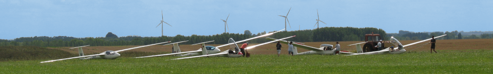
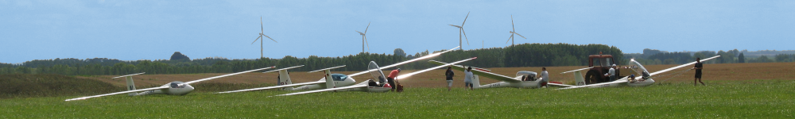
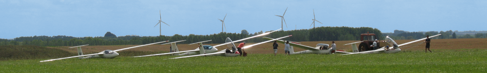
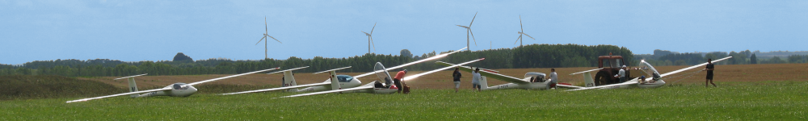

L'activité se pratique sur l'Aérodrome de Saint Quentin-Fontaine-lès-Clercs (Anciennement appelé Saint Quentin-Roupy) qui se situe sur la D930 à environ 7 kilomètres au Sud-Ouest de Saint Quentin. La plateforme se compose de quatre pistes en herbe d'environ 100 mètres de large et 700 mètres de long.
| Vue aérienne des quatres pistes en herbe |
| Plan d'accès de l'aérodrome |